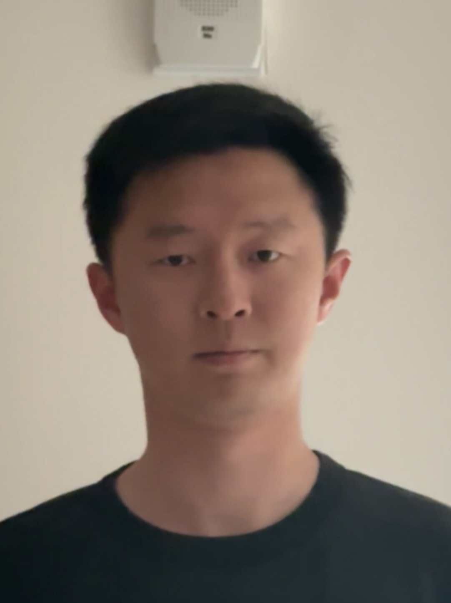
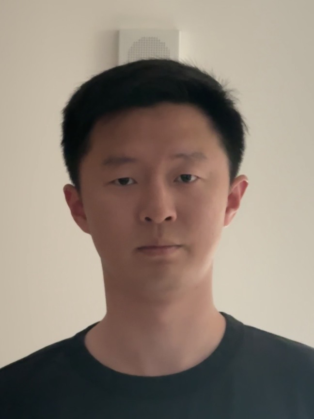
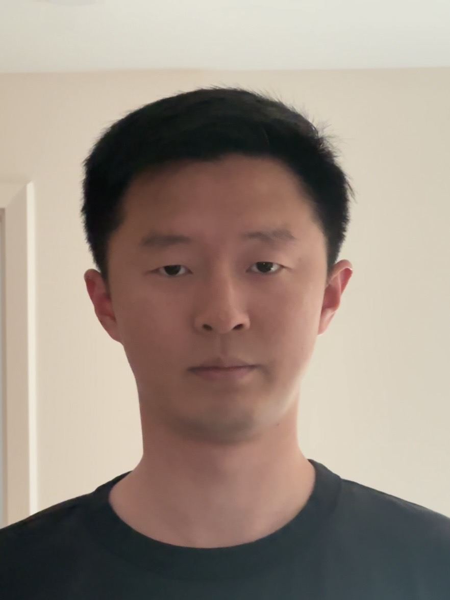
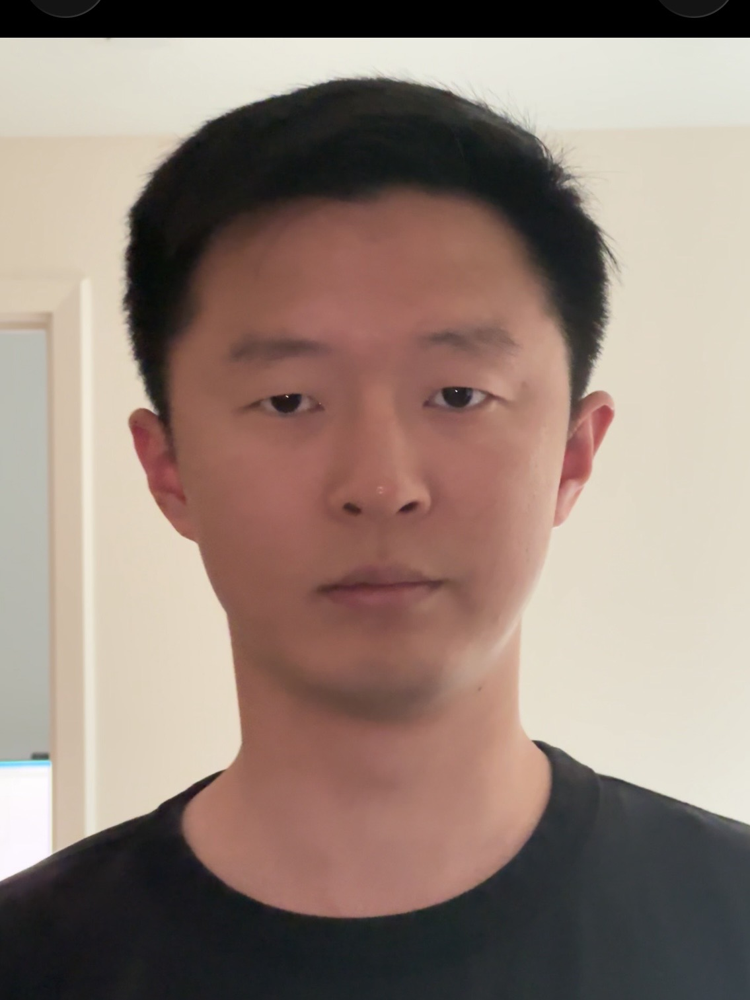
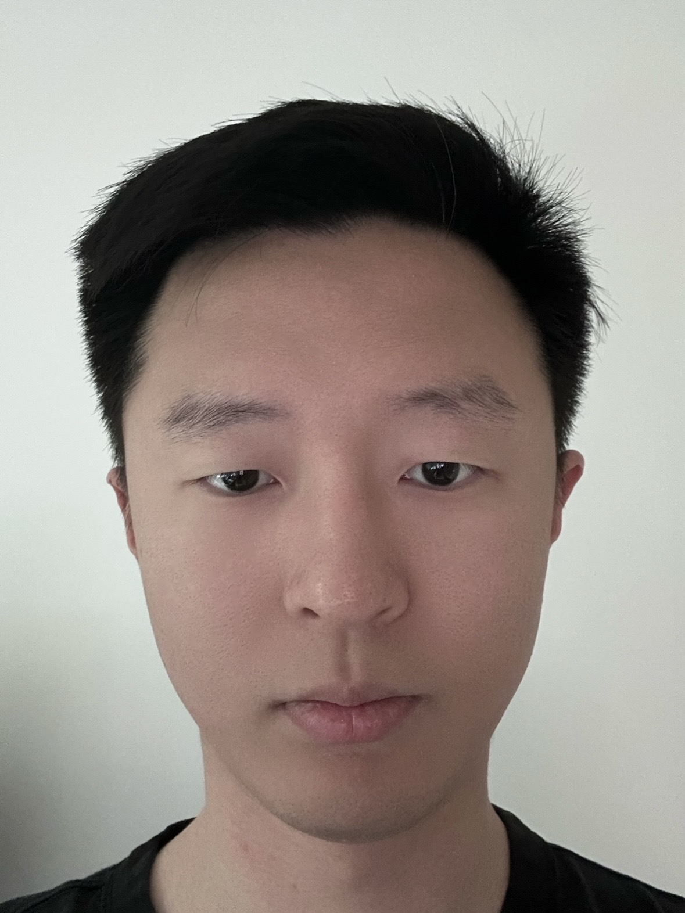
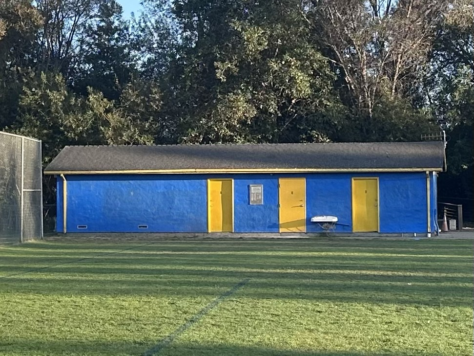
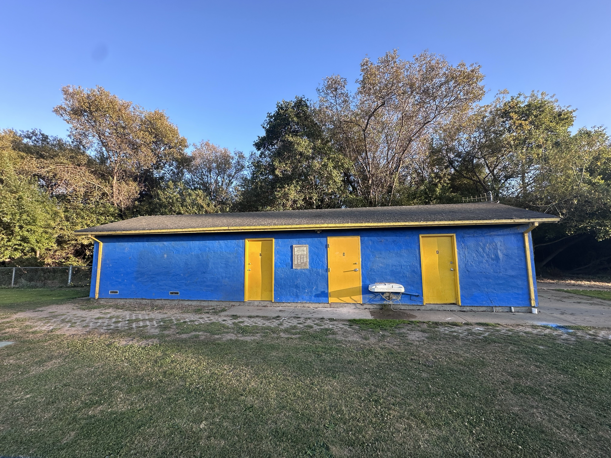
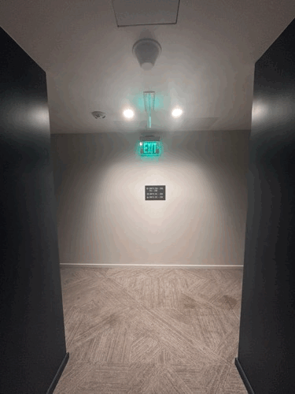

Project 0: Becoming Friends with Your Camera
Part 1: Selfie: The Wrong Way vs. The Right Way





Explanation
In the close-up portrait, the nose appears larger relative to the rest of the face. Stepping back and zooming in keeps the face approximately the same size in the image, but makes its proportions look more natural. This happens because increasing the camera distance reduces the relative distance differences between facial features.
Part 2: Architectural Perspective Compression


Explanation
In the distant, zoomed-in photo, the trees behind the building appear relatively larger, making the scene look flatter. In the closer photo without zoom, the depth between the building and the background is more apparent. Changing the camera position changes the perspective, while adjusting the zoom keeps the building approximately the same size.
Part 3: The Dolly Zoom

Explanation
In the GIF, the sign on the far wall stays approximately the same size while the hallway appears to stretch or compress. Moving the camera changes the perspective, while adjusting the zoom keeps the sign's size roughly constant. Together, these changes create the dolly zoom effect.